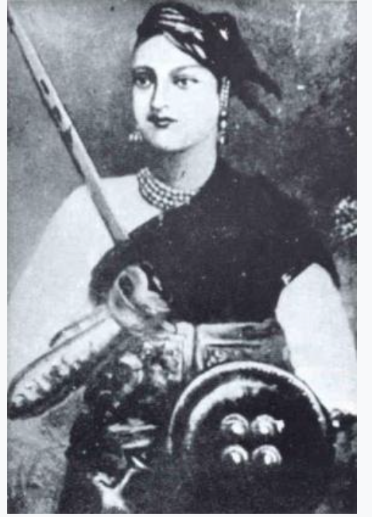

About Rani LakshmiBai |
|
|---|---|
| Rani Lakshmibai was born on 19 November 1828 (some sources say 1835) in the town of Varanasi into a
Marathi Karhade Brahmin family.She was named Manikarnika Tambe and was nicknamed Manu. Her father was
Moropant Tambe and her mother Bhagirathi Sapre (Bhagirathi Bai). Her parents came from the Tambe
village of the Guhagar taluka located in the Ratnagiri district of Maharashtra. Her mother died when she
was four years old. Her father was the Commander of the war of Kalyanpranth. Her father worked for
Peshwa Baji Rao II of Bithoor district. The Peshwa called her "Chhabili", which means "beautiful " and
"lively and cheerful". She was educated at home and was taught to read and write, and was more independent
in her childhood than others of her age; her studies included shooting, horsemanship, fencing and
mallakhamba with her childhood friends Nana Sahib and Tantia Tope.[dubious – discuss] Rani Lakshmibai
contrasted many of the patriarchal cultural expectations for women in India's society at this time.
And she was known for her unique perspectives and her courage to fight against social norms even in
front of the whole society. Rani Lakshmibai was accustomed to riding on horseback accompanied by escorts between the palace and the temple, although sometimes she was carried in a palanquin. Her horses included Sarangi, Pavan and Baadal; according to historians she rode Baadal when escaping from the fort in 1858. Her palace, the Rani Mahal, has now been converted into a museum. It houses a collection of archaeological remains of the period between the 9th and 12th centuries AD. Manikarnika was married to the Maharaja of Jhansi, Gangadhar Rao Newalkar, in May 1842 and was afterwards called Lakshmibai (or Laxmibai) in honour of the Hindu goddess Devi Lakshmi and according to the Maharashtrian tradition of women being given a new name after marriage. In September 1851, she gave birth to a boy, later named Damodar Rao, who died four months after birth due to a chronic illness. The Maharaja adopted a child called Anand Rao, the son of Gangadhar Rao's cousin, who was renamed Damodar Rao, on the day before the Maharaja died. The adoption was in the presence of the British political officer who was given a letter from the Maharaja instructing that the child be treated with respect and that the government of Jhansi should be given to his widow for her lifetime. |
 |